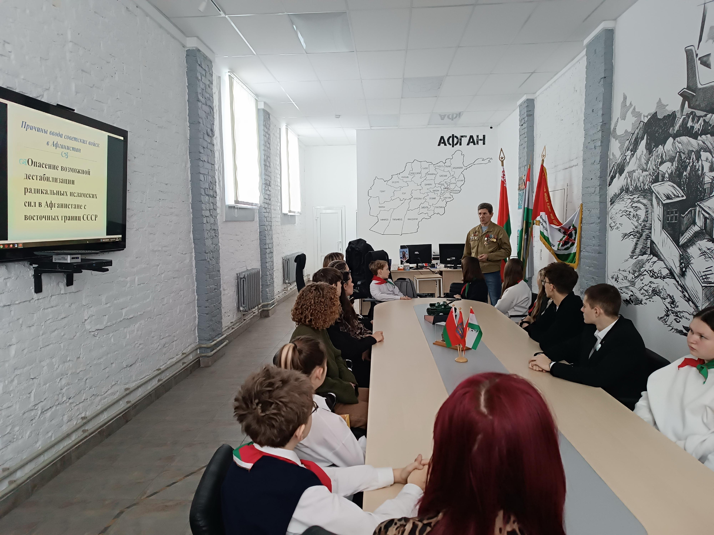
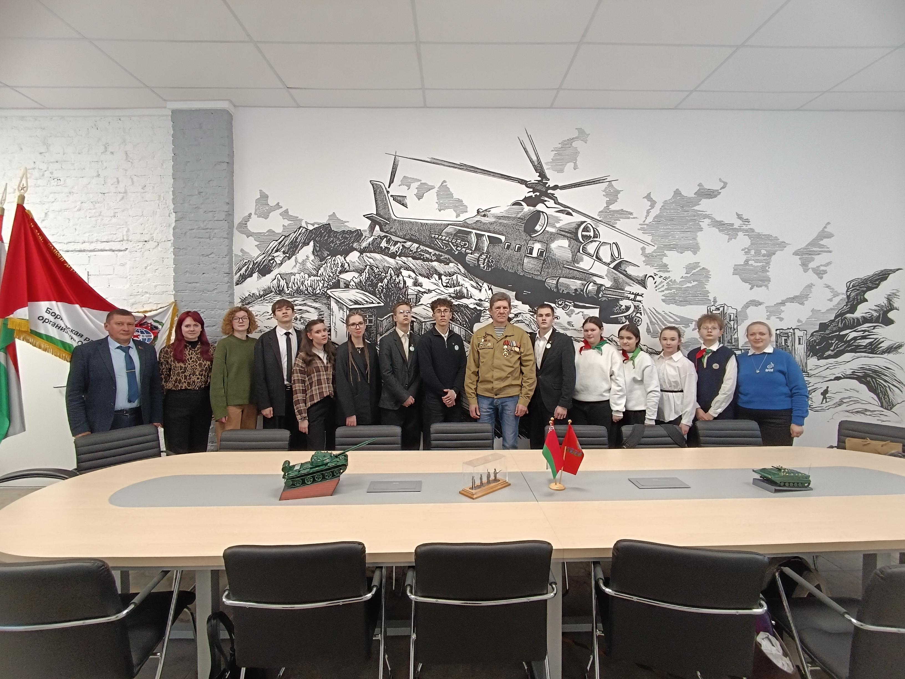

ВСТРЕЧА НА ВСЕ 100
4 февраля, в преддверии Дня памяти воинов-интернационалистов, активисты первичной организации ОО «БРСМ» и военно-патриотического клуба «Юнармеец» Государственного учреждения образования «Гимназия №1 г. Борисова» приняли участие в диалоговой площадке «Встреча на все 100». Спикером мероприятия выступил представитель Борисовской районной организации общественного объединения «Белорусский союз ветеранов войны в Афганистане» Юрий Крючек.

Юрий Александрович был призван в ряды Советской армии в 1987 году. После прохождения подготовки в учебной воинской части прибыл в составе подразделения для выполнения интернационального долга в Афганистан. Дальнейшая служба борисовчанина проходила в батальоне специального назначения. Разведчик-минер неоднократно выходил на боевые задания, участвовал в 9 походах против душманов. В одном из выходов группа столкнулась с превосходящими силами противника. В этом бою Юрий Александрович был тяжело ранен, а его мужество и отвага в бою отмечена орденом Красной Звезды. В настоящее время воин-интернационалист трудится на Борисовском заводе медицинских препаратов и активно участвует в патриотическом воспитании молодежи Борисовского района.
В ходе диалоговой площадки, учащиеся познакомились с героическими и трагическими страницами истории Афганской войны, узнали о мужестве и силе человеческого духа, верности воинскому долгу и доблести воинов, национальных и религиозных особенностях местных жителей, географических особенностях страны. Не оставил в своем рассказе без внимания ветеран и боевую учебу военнослужащих, их быт, питание и снабжение.
